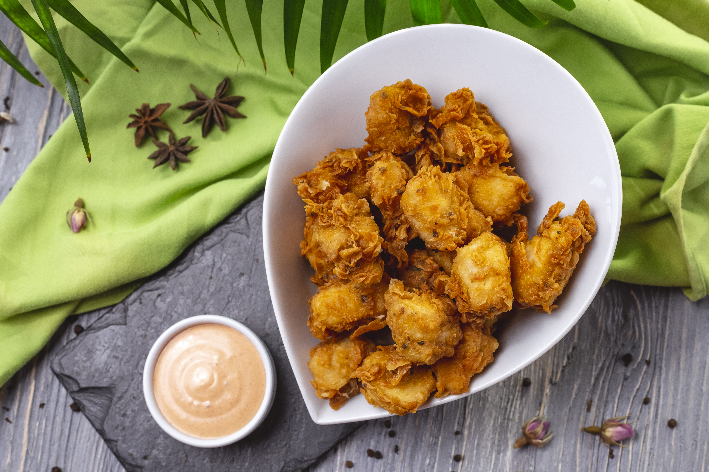

Home
Onion Pakoda

Whether you want to entertain guests or just enjoy the pleasant rainy evening or cold wintery days, crispy and spicy onion pakoda can never go out of fashion. Its even better when accompanied by masala tea or your favorite chutney. With this step by step photo recipe, making it at home is now easier than ever and you can’t go wrong with it even if you are novice. In this simple preparation, onions are mixed with gram flour, rice flour and basic Indian spices and then deep fried until crispy.
Ingredients
- 3 medium size Onions, finely sliced
- 1/2 cup Gram Flour (Besan Flour)
- 1/4 cup Rice Flour
- 1 teaspoon grated Ginger
- 5-7 Curry Leaves, chopped, optional
- 1/2 teaspoon Red Chilli Powder
- A pinch of Baking Soda (soda-bi-carbonate)
- 2 tablespoons finely chopped
- Coriander Leaves
- Oil, for deep frying
- Salt to taste
Steps
- Take sliced onion in a large bowl.
- Add gram flour, rice flour, ginger, curry leaves, red chilli powder, baking soda, coriander leaves and salt.
- Mix well using spoon and keep aside for 10 minutes.
- Add water little by little (approx. 1/4 cup) and mix all the ingredients such that sliced onion is coated well with flour batter. Do not add more water unless required – if batter becomes too watery or thin then pakodas will not turn crispy.
- Heat oil in a deep pan over medium flame. Check whether oil is sufficiently hot or not by dropping a pinch of mixture in hot oil – if it comes upward immediately, then oil is sufficiently hot for deep frying. Take small portion of mixture in the hand and gently drop 3-4 small fritters into the oil and deep-fry until they turn golden brown in color – keep stirring occasionally in between so that they cook evenly and keep heat/flame to medium.
- Take them out using slotted spoon and drain excess oil. Place them on paper towel in a plate to absorb excess oil. Repeat the process for remaining batter and deep-fry in batches. Do not over crowd the oil with onion fritters, this will help them cook evenly.